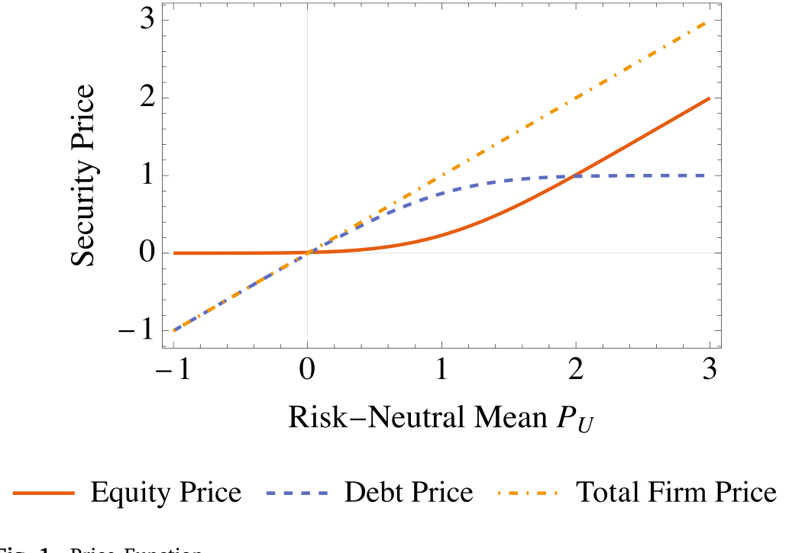
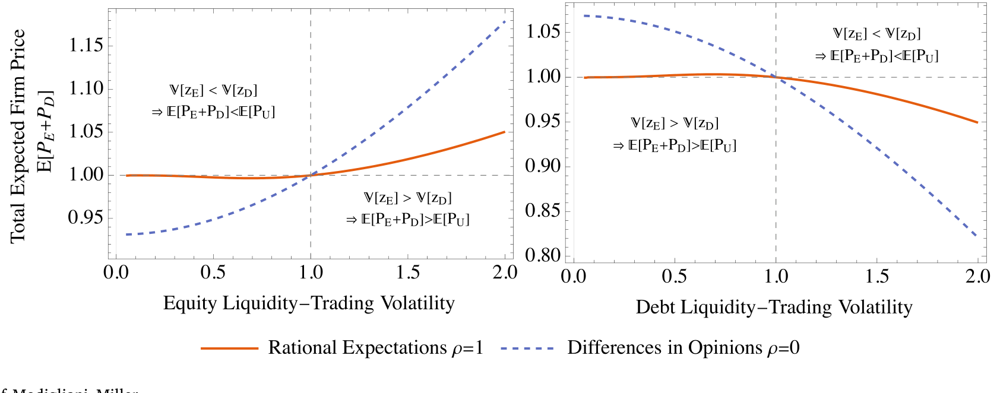
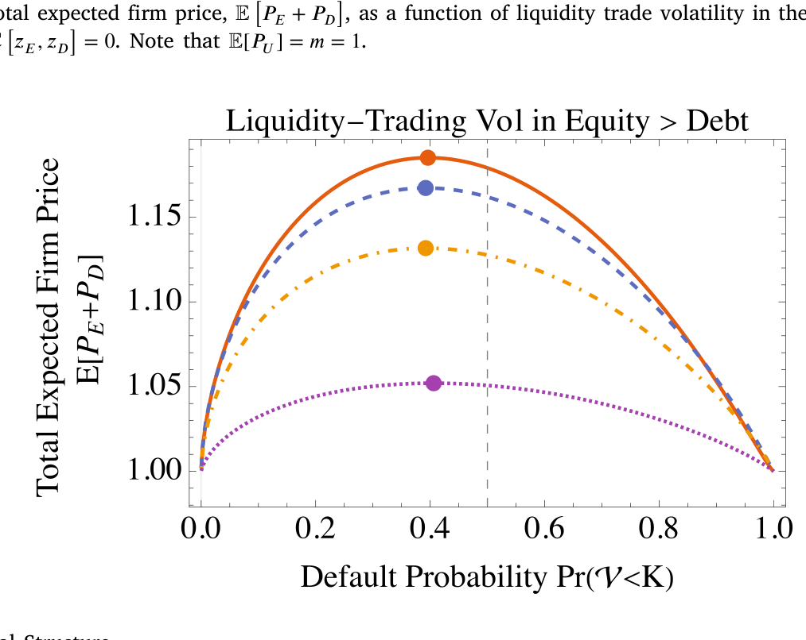
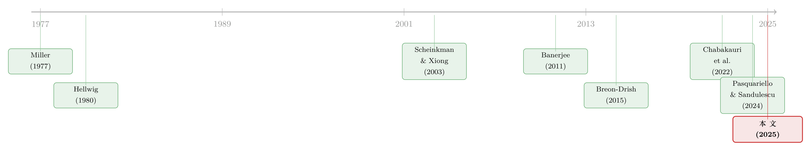

同一份分歧，两副面孔：当债与股都是现金流上的期权
本文读的是 Banerjee, Breon-Drish & Smith (2025, Journal of Financial Economics)：同一个「投资者意见分歧」，在股票市场里预示更低的未来收益，在债券市场里却预示更高的未来收益——这看似矛盾的经验事实，其实只需要一句话就能讲通：股权和债权都是公司现金流上的期权，一个凸、一个凹，于是 Jensen 不等式替它们各写了一半剧本。
1 一个让两类市场互相打脸的事实
先讲一个让人略感不安的经验规律。
在股票市场，一批研究发现：当分析师对一只股票未来盈利的看法越分散，这只股票随后的收益反而越低（Diether, Malloy & Scherbina, 2002）。这通常被解读成 Miller(1977) 那套老故事——存在卖空约束时，悲观者被挡在门外，价格只反映乐观者，于是被高估、未来收益低。分歧越大，高估越多，收益越低。听上去顺理成章。
可问题是，把同一把尺子搬到债券市场，结论却反了过来。Güntay & Hackbarth(2010) 发现，对同一家公司，意见越分散，它的债券未来收益（信用利差）反而越高。
于是一个尴尬的局面出现了：同一个变量（信念分散度），对同一家公司发行的两种证券，给出了符号相反的预测。 你很难用一套「分歧→高估→低收益」的直觉同时解释这两边——因为如果分歧让股票被高估，凭什么让债券被低估？
这正是本文想要回答的问题。
研究问题：在一个允许投资者既有私人信息、又可以「固执己见」的统一框架里，信念分散度、违约风险、乃至公司的资本结构，究竟如何同时决定股权与债权的预期收益？
接着，一个自然的问题是：传统模型为什么解释不了？作者给出的诊断相当干脆——因为几乎所有经典的噪声理性预期 (noisy rational expectations, RE) 模型和意见分歧 (difference of opinions, DO) 模型，都把证券的收益假设成基本面的线性函数。而债与股恰恰是现金流上非线性的期权式索取权。把非线性这一层抹掉，债和股看起来就长得一样，自然也就讲不出它们的差别。
真正关键的一步，就藏在这层被抹掉的非线性里。
2 模型：把「分歧」和「期权」同时塞进一个框架
本文的模型是 Hellwig(1980) 式的竞争性理性预期交易模型，加了两处改造：(i) 公司是有杠杆的，因此投资者交易的是同一份现金流切出来的债与股；(ii) 投资者可以选择忽略价格里的信息，即允许「同意彼此不同意」。
2.1 支付：债与股都是现金流上的期权
公司每股总现金流是一个正态随机变量：
$$\tilde v \equiv m + \theta, \qquad \theta \sim N(0,\sigma_\theta^2)$$
债的面值为 K。于是每股股权与每单位债权的支付为
$$V_E = \max(\tilde v - K,\ 0), \qquad V_D = \min(\tilde v,\ K), \qquad \tilde v = V_E + V_D.$$
请盯住这两行。股权是一份看涨期权（执行价 K），它对现金流是凸的；债权是「面值减一份看跌期权」，它对现金流是凹的。两者相加，恰好还原成线性的 \tilde v——这是后面理解 Modigliani–Miller 何时成立、何时被打破的关键钩子。
市场上还有提交随机需求 z \sim N(0,\sigma_z^2) 的流动性（噪声）交易者，债、股两个市场的人均供给都是 \kappa。一个细节很重要：作者特意让债和股的人均供给相等，这样改变资本结构（即改变 K）不会机械地改变投资者总共要持有的现金流，从而把「资本结构效应」与「供给效应」干净地分开。
2.2 信息与「固执己见」：本文的真正机关
有单位质量的投资者 i\in[0,1]，都是风险容忍度为 \tau 的 CARA 投资者，终端财富为
$$W_i = \kappa(P_D + P_E) + x_{E,i}(V_E - P_E) + x_{D,i}(V_D - P_D).$$
每个投资者看到一个私人信号 s_i = \theta + \varepsilon_i，\varepsilon_i \sim N(0,\sigma_\varepsilon^2)。到这里都还是标准配置。机关在下一步：投资者 i 如何看待别人的信号。沿用 Banerjee(2011)，作者假设投资者 i 主观上认为投资者 j 的信号长这样：
这一行是全文的枢纽。参数 \rho \in [0,1] 度量分歧 (disagreement) 的程度：
- 当
\rho = 1：s_j = \theta + \varepsilon_j，投资者正确理解别人的信号，于是完全采信价格里的信息——这就是理性预期 (RE)，退化回 Hellwig(1980)。 - 当
\rho = 0：s_j = \xi_i + \varepsilon_j，投资者认为别人的信号纯属噪声、毫无信息，于是完全无视价格——这就是 Miller(1977) 式的纯意见分歧 (pure DO)。 - 当
\rho\in(0,1)：投资者部分采信、部分忽视价格里的信息，落在两个极端之间。
这里要分清两个词。信念分散度 (belief dispersion) 指投资者对公司价值看法的离散程度，不问来源；它既可以来自「私人信息没被价格完全揭示」，也可以来自「投资者固执己见、互相不信」。分歧 (disagreement) 只指后者。本文最重要的政策含义之一，就是这两个来源对预期收益的影响方向相反——所以实证上必须把它们拆开。
2.3 为什么不能用线性均衡
到这里，一个老练的读者会想：CARA-正态，直接套线性均衡不就行了？
不行。因为 V_E=\max(\tilde v-K,0) 和 V_D=\min(\tilde v,K) 都不是正态的——期权把正态切成了「肥尾的一半」。于是经典 CARA-正态 RE 模型里那种「价格是基本面与噪声的线性函数」的均衡根本不存在。作者转而借助 Breon-Drish(2015) 的非线性均衡方法和 Chabakauri et al.(2022) 的多资产框架，求解一类广义线性均衡 (generalized linear equilibrium)：价格本身是某个线性统计量的（可以非线性的）单调函数。值得强调，这不是对线性均衡的近似，而是货真价实地允许了非线性的价格函数。
3 核心机制：风险中性测度 + Jensen 不等式
模型解出来之后，作者给了一个极其漂亮的表达：均衡价格可以写成「风险中性分布」下的预期支付，
$$P_E = \mathbb{E}^{\mathbb{Q}}\!\big[\max(\tilde v - K,\ 0)\big], \qquad P_D = \mathbb{E}^{\mathbb{Q}}\!\big[\min(\tilde v,\ K)\big],$$
其中风险中性下对现金流的预期，既随投资者的总体（aggregate）现金流预期上升，也随流动性交易者的需求上升。后面这一项——价格被噪声需求推动——是整个故事的发动机。
然后，真正关键的一步来了。
因为股权支付对现金流是凸的，所以股价 P_E 是「风险中性现金流预期」的凸函数；债权支付是凹的，债价 P_D 就是它的凹函数（如图 1）。一旦摆出凸与凹，Jensen 不等式立刻接管全局：

Figure 1: Price Function
股权与债权的预期超额收益，取决于「风险中性现金流预期的波动率」与「典型投资者（物理测度下）现金流预期的波动率」之间的差。
- 对股权（凸）：当风险中性预期更不波动时，预期超额收益为正；
- 对债权（凹）：方向恰好相反，当风险中性预期更不波动时，预期超额收益为负。
于是债和股拿到了符号相反的剧本——不是因为我们给它们安了两套假设，而仅仅因为一个凸、一个凹。
剩下的，只是去问：风险中性预期相对于个体预期，到底是更波动还是更不波动？作者指出有两股力量在拔河：
- 一方面，风险中性预期聚合了所有人的信念，平均之后往往比单个投资者的信念更平滑；
- 另一方面，风险中性预期里掺进了噪声交易需求，噪声波动
\sigma_z越大，它就越抖。
谁占上风，取决于分歧 \rho。当投资者把价格当回事（RE，\rho 高），他们给共同的价格信号更大权重，于是噪声波动被放大、风险中性预期更抖——结果是股票收益更低、债券收益更高。反之，当投资者固执己见（\rho 低）、无视价格，个体预期自己更抖；此时只要噪声波动 \sigma_z 足够低，第一股力量主导，结论反转为股票收益更高、债券收益更低。
至此，开篇的悖论被解开了：
- 由「信息+噪声」驱动的信念分散度（即
\sigma_z高、价格不透明）→ 股票收益↓、债券收益↑。这正好同时对上了 Diether et al.(2002) 与 Güntay & Hackbarth(2010)。 - 由「固执己见」驱动的分歧（即
\rho低）→ 在低噪声时给出相反符号。
所以这篇文章给实证研究撂下一句硬话：别再笼统地谈「分歧」与收益的关系了，先把分歧的来源拆开。这一点，和本博客此前介绍过的另一条思路不谋而合——分歧本身或许没那么重要，重要的是分歧背后的信息质量在如何变化（可参见《分歧本身没那么重要，重要的是「信息质量」在变》）。
4 违约风险与收益：一个驼峰形的反转
同一套凸/凹逻辑，顺手还解释了一桩资产定价里的老公案。
标准模型里，违约（distress）风险被当作一种风险暴露，按理应当带来更高的预期股票收益；可大量实证（如 Campbell, Hilscher & Szilagyi, 2008）发现，控制了常见风险因子后，高违约风险的股票收益反而更低；而 Garlappi, Shu & Yang(2008) 进一步发现这关系是驼峰形的。
本文的机制天然产出这个形状。对投资级的公司（离破产还远），违约风险上升会抬高债权的预期收益、压低股权的预期收益（与 Huang & Huang(2012)、以及股票端的 Campbell et al. 2008 一致）。但当公司逼近破产，股权那份看涨期权深度虚值、债权那份看跌期权深度实值，凸凹关系的强弱发生变化，于是关系反转——把两段拼起来，违约风险与股票预期收益之间就呈现整体的驼峰。
更精细的预测是：债券的预期收益，与「违约风险 × 流动性交易波动」的交互项正相关，却与「违约风险 × 分歧」的交互项负相关；股票端符号全部反过来。 这给了实证一组可以直接去检验的、带交互项的横截面假设。
5 资本结构：MM 在「没有摩擦」时也会失灵
到这里你可能以为故事讲完了。但真正出人意料的反转，在资本结构这一节。
先看基准情形：当债、股两个市场的流动性需求完全相同时，噪声交易对债与股「估值偏差」的影响恰好抵消——债被压低多少，股就被抬高多少。于是杠杆怎么变，公司总价值不变，Modigliani–Miller 无关性照样成立，哪怕这里既没有税盾、也没有破产成本这些传统摩擦。这与 Chabakauri et al.(2022) 的结论一脉相承。
然后，作者把这块基石轻轻一抽：如果两个市场的流动性交易波动不一样呢？
这一步立刻打破了无关性（如图 5）。当股票市场的流动性波动 \sigma_z^E 高于债券市场的 \sigma_z^D 时，股权估值被「吹高」的幅度，大于债权被「压低」的幅度，两者不再抵消——加杠杆反而抬高了公司总价值。

Figure 5: Violations of Modigliani–Miller
把这条逻辑推到底，公司总价值会随杠杆呈驼峰：存在一个内点最优杠杆，而它的来源既不是税盾、也不是财务困境成本，而纯粹是两个市场流动性的相对多寡（如图 6）。在现实中，公司债市场参与者更少、更专业、流动性通常更差，于是「股票更好交易」这件事本身，就成了企业举债的一个理由。

Figure 6: Optimal Capital Structure
这是个值得停下来体会的论点：资本结构之所以「有关」，可以完全来自市场微观结构（两边流动性不对称），而无需任何经典的资本结构摩擦。它把「为什么公司选择这个杠杆」从税与破产的争论里，拽到了交易与流动性的战场上。
作者还顺手给出一个跨市场预言：当违约可能性较低时，股价与债价的相关性随杠杆上升，这与 Pasquariello & Sandulescu(2024) 在 Kyle 框架下的经验证据吻合。
6 文献脉络
把这条线索捋一捋，会发现本文站在两条河流的交汇处。
第一条河，是「分歧 / 固执己见」。源头是 Miller(1977)：分歧 + 卖空约束 → 高估。Morris(1994) 在理性框架里讨论异质先验如何与非对称信息共存；Scheinkman & Xiong(2003) 用过度自信讲出投机泡沫；Banerjee(2011) 给出本文直接借用的那套主观信念设定，把「投资者多大程度相信价格」参数化为一个 \rho。
第二条河，是「噪声理性预期 + 期权式支付」。Hellwig(1980) 奠定了竞争性 RE 交易模型的范式，但它困在线性支付里；Breon-Drish(2015) 打破了「价格必须线性」的枷锁，让非线性均衡变得可解；Chabakauri et al.(2022) 把它推广到多资产，并指出价格信息量与资本结构无关。

本文 Banerjee, Breon-Drish & Smith(2025) 做的，是把这两条河接到一起：既允许投资者固执己见（DO 的灵魂），又老老实实处理债与股的期权式非线性（RE-期权这一支的技术）。正因为两者同框，它才能讲出「同一个分散度、债股两副面孔」这种单独任何一支都讲不出的故事。这也让它与同期一批在 Kyle / Glosten–Milgrom 框架里研究债股联合定价的工作（Back & Crotty, 2015；Albagli, Hellwig & Tsyvinski, 2021, 2024；Frenkel, 2023）形成互补——区别在于，那些模型里定价者多是风险中性的做市商，而本文的投资者是风险厌恶的，且可以无视价格。
7 评论与延伸（Q&A + 研究方向）
(a) 几个可能的疑问
Q：说到底，债与股「方向相反」，难道不是因为它们本来就是一份现金流的此消彼长（一个多了另一个就少）吗？
不是这个机械关系。在基准对称情形里，债与股的估值偏差恰好抵消、总价值不变，但它们的预期收益符号相反，靠的是凸 vs 凹经过 Jensen 不等式的放大——是支付函数的曲率，而非「你多我少」的预算约束。
Q：「信念分散度」和「分歧」到底差在哪，为什么非要拆开？
分散度是结果（看法有多散），分歧是其中一个来源（固执己见、无视价格）。本文证明：由「信息不透明 + 噪声」造成的分散度，与由「固执己见」造成的分歧，对预期收益的影响在低噪声时符号相反。混在一起回归，等于把两股反向的力加总，系数会被污染。
Q：把价格写成风险中性测度下的期望，是不是偷偷假设了无套利或风险中性投资者？
没有。投资者是 CARA、风险厌恶的。所谓「风险中性分布」只是把均衡价格重新表达成某个调整后测度下的期望，方便用 Jensen 看清凸凹；它内生于 CARA-需求与市场出清，而非外生强加的定价核。
Q：MM 失灵的关键，是「两个市场流动性不同」，可这听起来像随便加的一个不对称。它稳健吗？
它确实是驱动力，但并非随手所加，而是对现实的刻画：债券市场参与者更少、更专业、流动性更差，本就是公认的特征事实。模型只是把这条特征事实的定价后果算到底——并诚实地承认，一旦两市场对称，结论就回到 MM。
Q：这套机制能解释多大的量？它会不会只是定性成立？
这是一篇理论文章，给的是比较静态的符号与单调性（分散度↑→股收益↓、债收益↑；违约风险与股收益呈驼峰；价值随杠杆呈驼峰），而非拟合出的弹性。它的价值在于把一组互相打架的经验事实逻辑自洽地装进一个模型，并吐出可检验的交互项预测，真正的量级要留给后续实证。
Q：投资者「固执己见」到底现实吗？还是只是为了凑出反转？
作者特意论证它有更广的外延：除了 Banerjee(2011) 式的主观信念，「忽视价格信息」还可由 cursedness、信息解读成本（Mondria, Vives & Yang, 2022）、wishful thinking 等多种微观基础导出。
\rho是这些机制的约简式代表，而非孤立假设。
(b) 几个可能的研究问题与提案
1. 把「分散度的两个来源」在公司债市场拆开
【经济故事】本文最锋利的预言，是「信息驱动」与「固执己见驱动」的分散度对债券收益符号相反。能不能在数据里把它们分离？比如用分析师/卖方预测离散度近似总分散度，用价格的事后信息含量（价格能否预测随后基本面）近似
\rho。 【可行性】中。债券端可取 TRACE 成交与利差、Mergent FISD 基本面，难点在于为「投资者多大程度采信价格」找到可信代理；可借鉴换手率、机构持仓集中度作工具。
2. 外资持有人会如何改变 \sigma_z 与 \rho？
【经济故事】外资进入一国公司债市场，往往同时改变了噪声交易的规模（流动性需求）和投资者对本地价格的信任程度。按本文逻辑，这会沿着「风险中性预期波动率」这条管道，重写债与股的相对预期收益。 【可行性】中。可用各国指数纳入、资本账户开放等事件做准自然实验，结合外资持仓微观数据；识别上要小心外资进入同时带来的基本面冲击。这与本博客关注的《谁在持有这张债券，决定了它的价格》是同一条问题脉络。
3. 检验「违约风险 × 流动性波动」与「违约风险 × 分歧」的反向交互
【经济故事】本文给出一组干净的、带交互项的横截面假设：债券预期收益与（违约风险 × 流动性波动）正相关、与（违约风险 × 分歧）负相关，股票端反号。这几乎是为实证量身定做的。 【可行性】高。违约风险有现成度量（距离违约、信用评级），流动性波动可由 Amihud / 报价深度的波动构造，分歧用预测离散度；标准 Fama-MacBeth 横截面即可上手。
4. 资本结构选择的「流动性动机」
【经济故事】若杠杆能因「股票比债券更好交易」而创造价值，那么股票相对流动性更高的公司，应当系统性地选择更高的杠杆——一个与税盾、困境成本都正交的全新资本结构决定因素。 【可行性】低到中。需要把股、债相对流动性与杠杆决策联系起来，并设法排除反向因果（杠杆本身也会影响流动性）；或许可借某些只冲击交易成本、不冲击基本面的微观结构改革做识别。
8 我的判断与参考文献
贡献。这篇文章最让我欣赏的，是它的「省」：不靠新摩擦、不靠新偏好，只把一件被几乎所有线性模型省略掉的事实——债与股是现金流上的期权——补回去，就同时解释了分散度对债股的反向预测、违约风险与股票收益的驼峰、以及无摩擦下 MM 的失灵。一个凸、一个凹，Jensen 替它写完了剧本。把「分散度的来源」明确拆成信息与固执己见两支，并指出它们符号可能相反，是给实证研究的一份很实在的礼物。
对识别的担忧。这是理论，所谓「识别」要看它给实证留下的接口是否可操作。我最担心两点：其一，\rho（投资者多大程度无视价格）在数据里几乎没有直接对应物，整套「反转」预测的可证伪性，悬于能否找到 \rho 的可信代理；其二，「MM 失灵来自两市场流动性不对称」这条最抓人的结论，恰恰建立在一个外生设定的流动性波动差 \sigma_z^E \ne \sigma_z^D 上——模型说清了「如果不对称会怎样」，却没内生出「为什么不对称、不对称多大」，而现实里流动性与杠杆是互为因果的。
后续想看到什么。我最想看到有人把第 7(b) 节第 3 条那组交互项预测，拿去公司债横截面里硬碰硬地检验一次——它的符号结构足够具体、足够反直觉，是这篇理论最容易被证伪、也最值得被证实的地方。
参考文献
- Albagli, E., Hellwig, C., & Tsyvinski, A. (2024). Information aggregation with asymmetric asset payoffs. Journal of Finance 79(4), 2715–2758.
- Back, K., & Crotty, K. (2015). The informational role of stock and bond volume. Review of Financial Studies 28(5), 1381–1427.
- Bai, J., Goldstein, R. S., & Yang, F. (2020). Is the credit spread puzzle a myth? Journal of Financial Economics 137(2), 297–319.
- Banerjee, S. (2011). Learning from prices and the dispersion in beliefs. Review of Financial Studies 24(9), 3025–3068.
- Kandel, E., & Pearson, N. D. (1995). Differential interpretation of public signals and trade in speculative markets. Journal of Political Economy 103(4), 831–872.
- Miller, E. (1977). Risk, uncertainty, and divergence of opinion. Journal of Finance 32(4), 1151–1168.
- Mondria, J., Vives, X., & Yang, L. (2022). Costly interpretation of asset prices. Management Science 68(1), 52–74.
- Morris, S. (1994). Trade with heterogeneous prior beliefs and asymmetric information. Econometrica 62, 1327.
- Pasquariello, P., & Sandulescu, M. (2024). Speculation and liquidity in stock and corporate bond markets. Working Paper, University of Michigan.
- Scheinkman, J., & Xiong, W. (2003). Overconfidence and speculative bubbles. Journal of Political Economy 111(6), 1183–1220.